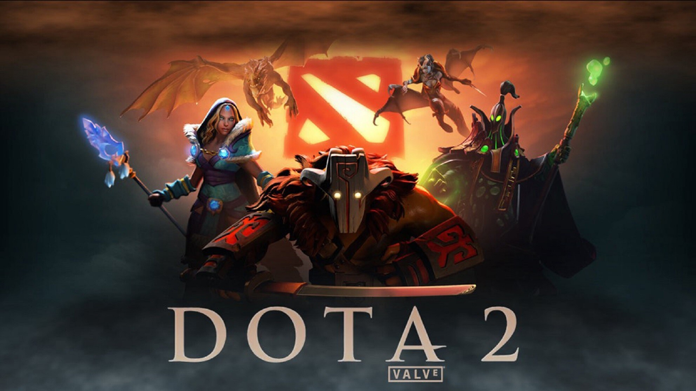

ОБНОВЛЕНИЕ 7.24
ОБЩИЕ ИЗМЕНЕНИЯ
- Теперь у героев есть отдельная ячейка для нейтральных предметов. Каждый герой может носить активным не больше одного нейтрального предмета.
- Теперь у фонтана есть общий тайник. Нейтральные предметы находятся там, а не на земле. Нажав правой кнопкой на доступный предмет в новом интерфейсе, вы поместите его в тайник или в курьера, чтобы его можно было забрать. Новый интерфейс также показывает состояние и расположение остальных выпавших предметов.
- Нейтральный предмет можно мгновенно переложить в общий тайник, выбрав нужный пункт контекстного меню (из рюкзака или нейтральной ячейки).
- Число ячеек ранца уменьшено с 4 до 3.
- Теперь каждой команде могут выпасть по 4 нейтральных предмета каждого разряда (шанс выпадения увеличен с 9% до 10%).
- Шанс выпадения нейтральных предметов с древних крипов в 3 раза выше.
- С карты убраны святыни
- Аванпосты перемещены в основные леса на каждой из сторон
- Обзор аванпостов изменён: был неограниченный в радиусе 1400, стал наземный в радиусе 700 (радиус раскрытия невидимости уменьшен соответственно).

- Теперь аванпосты изначально принадлежат своим командам, и их можно захватить когда угодно (первая награда по-прежнему выдаётся в 10:00).
- Изменено расположение деревьев в тех местах, где были аванпосты.
- Немного сдвинут средний лагерь нейтральных крипов в основном лесу сил Тьмы.
- Руны богатства с линий перемещены в дополнительные леса.
- Убраны все таланты, увеличивающие золото в минуту
- Void Spirit и Snapfire добавлены в режим Captain's Mode
- Время возрождения героев на уровнях 1–5 увеличено с 6/8/10/14/16 до 12/15/18/21/24 секунд.
- Стоимость выкупа увеличена со (100 + ценность/13) на (200 + ценность/12).
- Смерть курьера больше не останавливает пассивное получение золота.
- Награда каждому игроку за убийство курьера увеличена с (25 + 5*уровень) до (30 + 7*уровень)
- Время возрождения курьера в секундах изменено с (50 + 7*уровень) на (60 + 7*уровень).
- Скорость передвижения курьера увеличена с 280 до 290.
- Курьеры больше не могут ставить варды на 15 уровне.
- Курьеры больше не могут использовать предметы на 25 уровне.
- Теперь заряды способностей выделены в отдельном интерфейсе, а не как положительные эффекты.
- Радиус атак ближнего боя по Observer Ward и Sentry Ward увеличен на 150.
- Предметы 5 разряда теперь выпадают после 60:00 (см. изменения предметов ниже)
